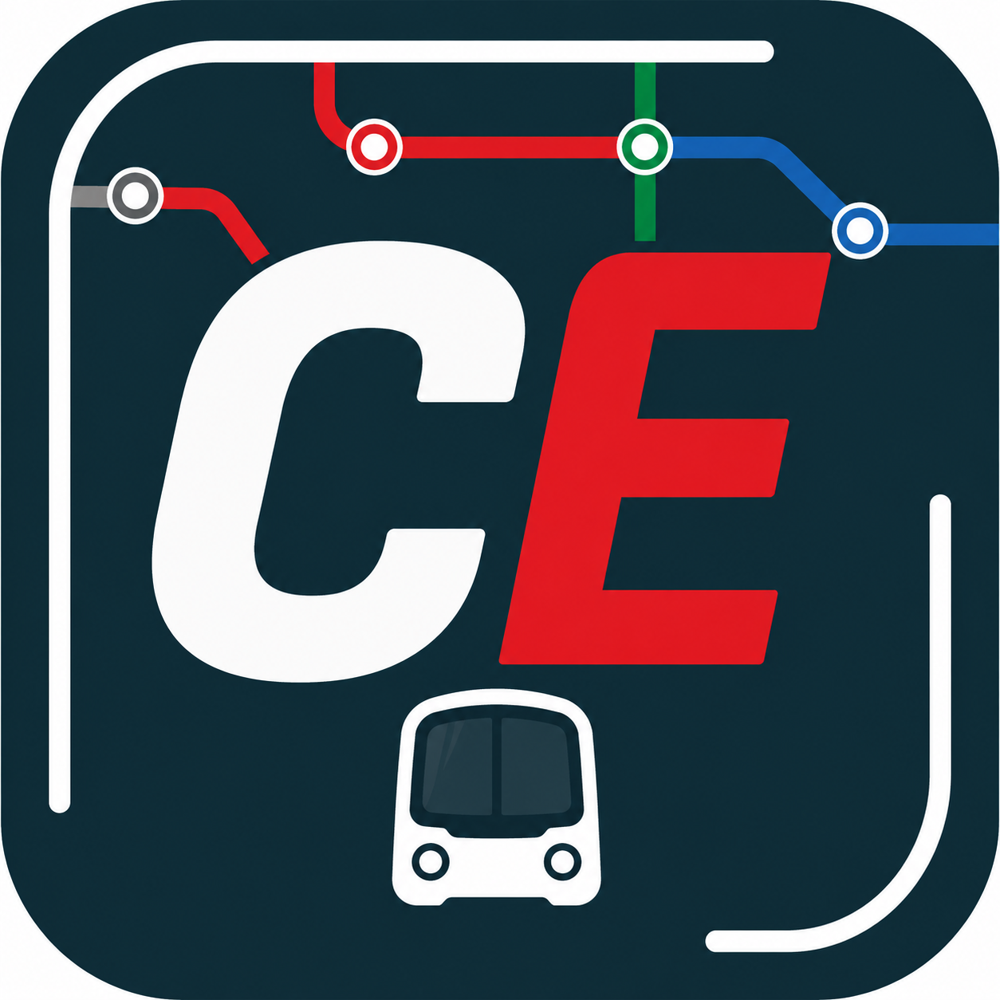
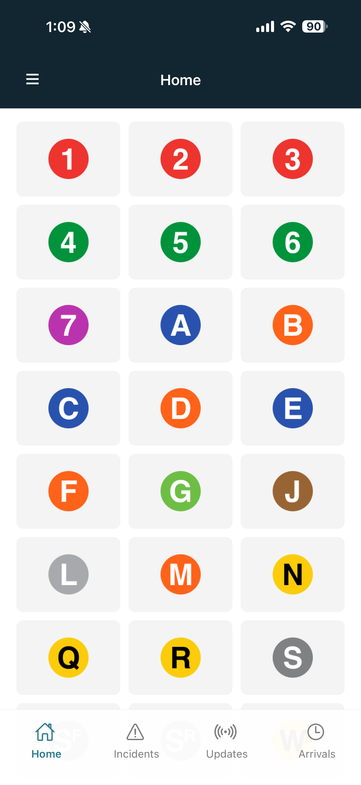
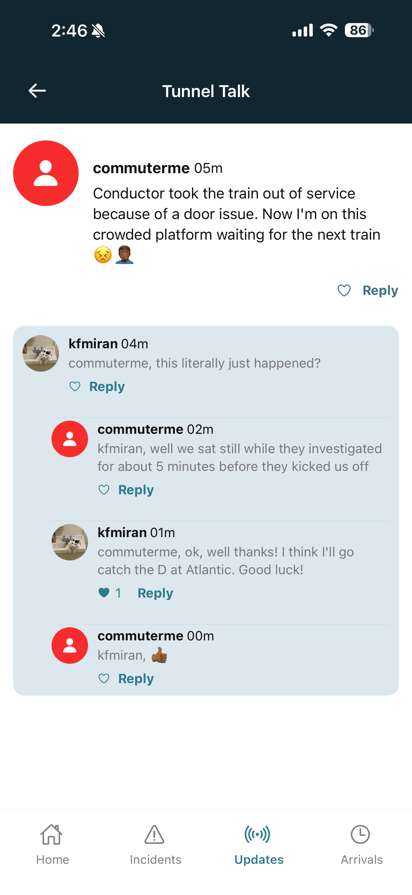
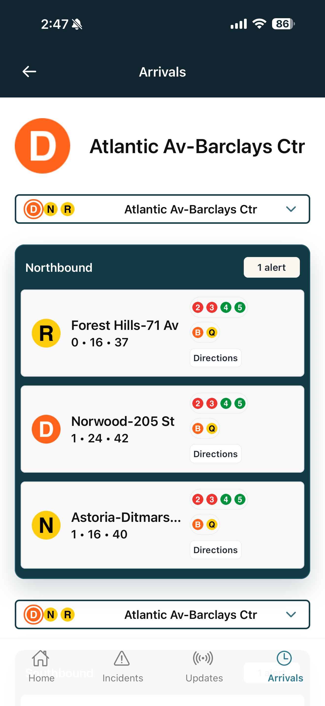
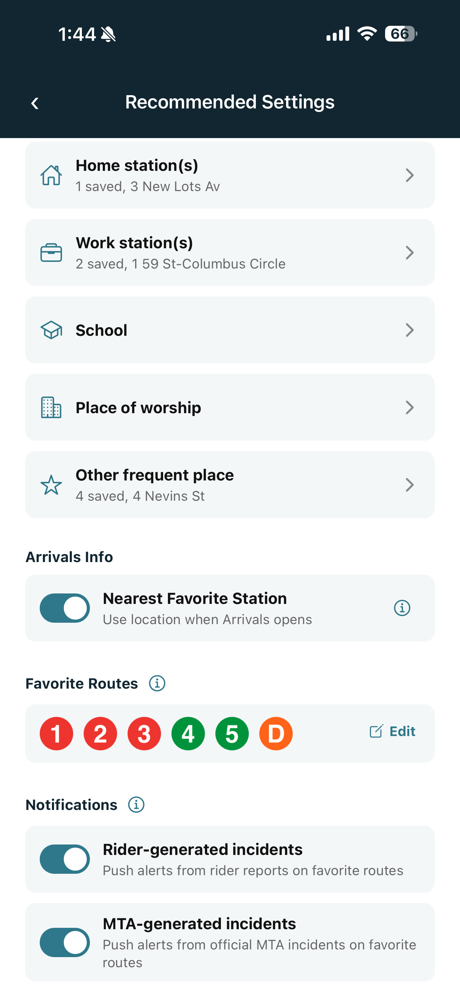

Arrivals and service alerts
See arrivals for the station you open most often, with matched official MTA alerts nearby.

Commuter EyeBuilt for NYC subway riders
Commuter Eye doesn't just provide riders with real-time transit information. It provides riders with access to each other, because getting there isn't the same as getting it.



Choose the lines you rely on.
Save home, work, school, and regular stops.
Get alerts that match your actual commute.
What Commuter Eye does
See arrivals for the station you open most often, with matched official MTA alerts nearby.
Share short, station-specific updates so other riders can understand what is happening now.
Set home base, work base, school, place of worship, or other regular stations without digging.
Choose favorite route incidents, unexpected disruptions, planned service changes, and activity alerts.
Made for quick checks
Commuter Eye can use favorite stations and location permission to show the nearest regular station when Arrivals opens. Riders stay in control, but the app can take a little work off their plate.

FAQ
Commuter Eye is a real-time subway information app that combines official train arrival data with rider-generated alerts and live discussion.
Alerts are submitted by riders using the app. Similar reports are grouped together automatically to reduce duplicates and keep information organized.
Yes. Arrival times are powered by official real-time MTA train feed data.
Commuter Eye includes both community-generated rider reports and official MTA service information.
Rider-submitted alerts appear in Live Updates and Tunnel Talk, while official MTA service alerts and realtime train data appear throughout the Arrivals experience when available.
Incidents expire when no new rider alert has been submitted for 30 minutes. Alerts and replies attached to that incident expire with it.
Commuter Eye clusters similar reports into one incident to reduce clutter and make active problems easier to follow.
Tunnel Talk is the discussion layer attached to an alert where riders can share updates, reactions, photos, and videos in real time.
If location services are enabled, Commuter Eye shows stations closest to your current location to help you quickly access nearby arrivals and alerts.
No. Location is only used to provide nearby stations and local alert relevance when location services are enabled.
Some subway lines split into multiple branches. Commuter Eye allows riders to choose the correct branch so arrivals and alerts stay accurate.
Arrival times depend on live MTA data. Occasionally feeds may delay, refresh, or temporarily lose train positions.
Yes. Riders can attach photos and videos to alerts to provide visual confirmation of conditions underground. Videos are limited to 15 seconds.
Arrival times update continuously to reflect live train movement and changing service conditions.
Commuter Eye automatically merges similar reports into a shared incident thread so riders can collaborate in one place.
Some interactive features such as posting alerts, comments, likes, and replies may require signing in.
Yes. Favorite Routes can be managed in Recommended Settings and User Profile, then used for route alert preferences.
Yes. Favorite Stations can be managed in Recommended Settings so Commuter Eye can keep regular stops close at hand.
Yes. Notification controls are available in Recommended Settings for incidents affecting your favorite routes when Notifications is enabled.
No. Commuter Eye is an independent rider-focused platform that uses publicly available MTA data.
Beta testing
Beta testers can help improve alert accuracy, station defaults, notification behavior, and the small daily decisions that make a transit app feel trustworthy.
Ask to join the betaSupport
Email kfmiran@commutereye.com.